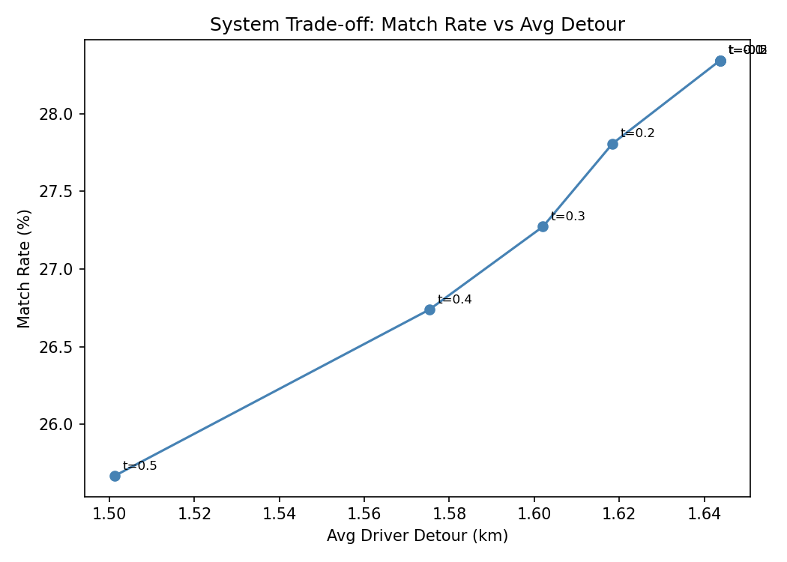

The average US car carries 1.08 passengers during peak hours
- Uber/Lyft built for professional drivers — not regular commuters
- Commuters have fixed routes and low detour tolerance
- 3 km detour on a 4 km commute → unacceptable
- 3 km detour on a 40 km commute → perfectly fine
- No existing algorithm models this interaction
- Matching must balance detour, fare, and timing simultaneously
↓
+ Rider B: 1.8 km detour, $22 fare ✅
+ Rider C: 1.8 km detour, $3 fare ❌
Same detour. Different economics.
Only ML handles this.
No P2P carpooling dataset exists — we built one
- Source: NYC TLC Yellow Taxi — 3.5M trips, August 2025
- Problem: TLC removed GPS coordinates in 2016 (privacy)
- Solution: Synthesize coordinates from official zone shapefiles
- Zonal bounding box distribution for pickups
- Forward azimuth spherical projection for dropoffs
- Point-in-polygon rejection sampling for validity
- Output: 1,290 labeled driver–rider pairs (AM 7–10 + PM 4–7)
- Label split: 44% accepted / 56% rejected
- Labels via 4-factor composite + Gumbel noise (human irrationality)

Accepted pairs (green): lower detour, higher overlap — labeling produces realistic patterns
Simulate → Predict → Optimize
① SIMULATE
- BallTree spatial index
- 5-min temporal batches
- 9 engineered features per pair
- Multi-factor stochastic labels
Why BallTree? O(log N) vs O(N²) brute force
Why stochastic labels? Deterministic labels → trivial 100% accuracy with zero generalization
② PREDICT
- XGBRegressor → detour (km)
- XGBClassifier → accept prob
- Score = prob − λ · detour
- Grid search + 5-fold CV
Why XGBoost? Tabular data outperforms neural nets (Grinsztajn et al., 2022)
Why dual-model? Problem is simultaneously regression AND classification
③ OPTIMIZE
- Bipartite graph (D ↔ R)
- Max-weight matching
- Globally optimal 1:1
- Inference-time only
Why inference-only? Train on full distribution → model learns mediocre pairs too, no selection bias
XGBoost ranks matches — rule-based can't
| Model | Accuracy | F1 | ROC-AUC |
|---|---|---|---|
| Rule-Based | 93.3% | 92.9% | — |
| Logistic Regression | 90.0% | 89.9% | — |
| XGBoost (tuned) | 92.0% | 91.2% | 0.966 |
Rule-based outputs binary 0/1 — same answer for a 0.1 km detour with $40 fare as a 2.9 km detour with $3 fare. XGBoost outputs a continuous probability (0.0–1.0) that the bipartite optimizer uses as edge weights.

ROC-AUC = 0.971 — reliable ranking across all thresholds
What actually drives acceptance?

XGBoost feature importance by gain (classifier)
Note: per-feature ablation sensitivity is limited at n=720 pairs — importance by gain is the robust measure used here.
- time_diff_mins — temporal compatibility is the #1 factor
- driver_orig_dist — detour tolerance scales with trip length
- fare_ratio — rider fare / driver fare economic signal
- shareability_count — corridor density proxy (Santi et al., PNAS 2014)
- pickup_hour / pickup_dow — temporal context
Real-world impact of the matching system
Bipartite optimizer selects globally optimal 1:1 assignments from 187 test drivers (AM + PM) — not greedy pairing.

Trade-off curve: higher score threshold → lower avg detour, lower match rate
What we built — and where it breaks
Three Novel Contributions
Honest Limitations